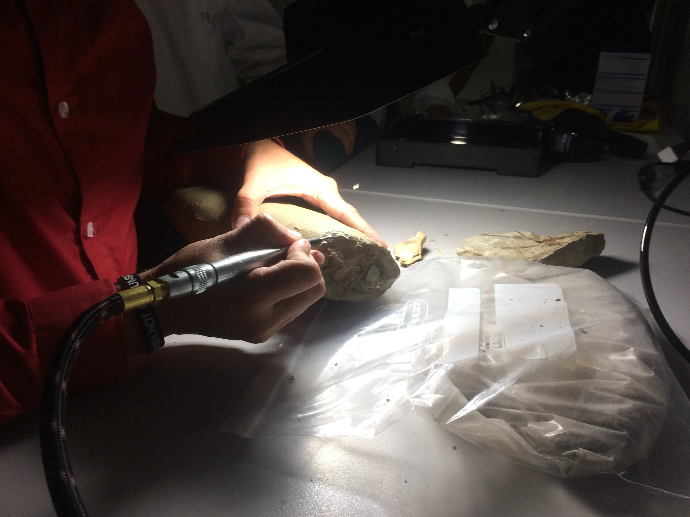
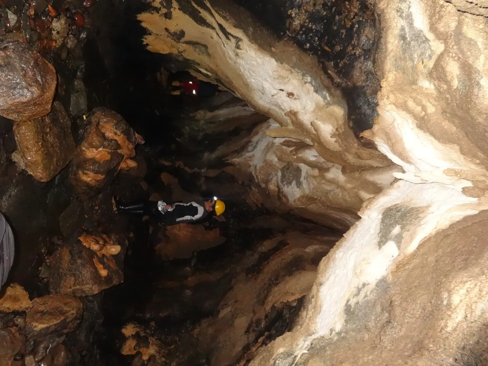

A discovery with a place
01
Ecuador’s first mosasaur fossil.
Discovered through the Rikuna expedition and carried into peer-reviewed research, the fossil gives Amazonian heritage a new scientific point of reference.

We turn scientific knowledge into practical, community-led action for environmental resilience, social equity, and a future shaped by curiosity.
Explore the workThe Garzón Institute is a non-profit organization committed to driving innovative solutions to the most important social and environmental challenges of the 21st century. Our work lies at the intersection of science, education, environmental conservation, and community empowerment.
From Amazonian fossil discovery to atmospheric water and sustainable enterprise, each initiative begins with a real place, a real question, and the people closest to it.

Scientific research, environmental education, and community empowerment in the heart of the Ecuadorian Amazon.
Enter the project ↗
Nanotechnology coatings that improve atmospheric water collection for vulnerable and water-stressed communities.
Enter the project ↗
Training, mentorship, and tools for indigenous and rural leaders building environmentally responsible ventures.
Enter the project ↗Knowledge is not an end point.
It is a way to protect life.

We believe science should not remain confined to laboratories. That is why we bring it to communities, rural areas, the Amazon region, and every place where it can transform lives.
Meet the institute ↗Our work is measured in discoveries, more capable communities, and solutions that can travel without losing their local meaning.

Discovered through the Rikuna expedition and carried into peer-reviewed research, the fossil gives Amazonian heritage a new scientific point of reference.
Potential improvement in atmospheric water collection through Water-Y’s nanotechnology coating.
Connected areas of work: research, environmental conservation, inclusive education, and community development.

We work alongside Indigenous communities, local leaders, youth, educators, and collaborators to design solutions that respect knowledge, place, and lived experience.
“We build a world where science drives social justice and environmental resilience.”
Garzón InstituteOur partners include universities, NGOs, research institutions, government programs, and global communities who share a vision for sustainable development.

Follow the projects, read the stories, or help us take the next field-tested idea further.
Connect with the institute ↗